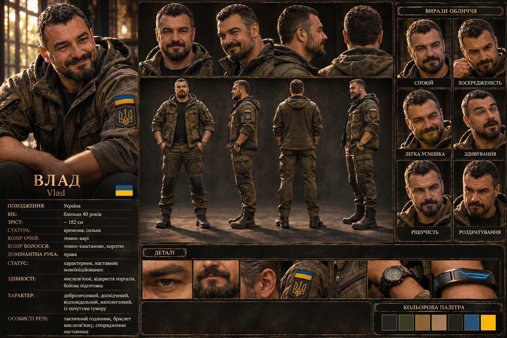

РОЛЬ У СЮЖЕТІ
Досліджує нове разом із друзями
На початку Влад приносить друзям відео з порталом і разом із ними намагається зрозуміти, що відбувається. Коли розмова переходить до браслетів, він висуває припущення, що їх могли видати не лише як перепустки до захищених комплексів.
У підземному місті Влад бере участь у повсякденних пригодах компанії: пропонує піднятися на поверхню, долучається до дослідження нових секторів і підтримує ідею поїздки до іншого підземного міста. У цих сценах він постає активним учасником компанії, якому цікаво перевіряти нові можливості на практиці.
Його дружба з Артемом і Денисом поступово поширюється й на Кайра. Для Влада походження нового знайомого з іншого плану не стає перешкодою для звичайного підліткового спілкування.
ХАРАКТЕР І ПОВЕДІНКА
Відкритий до нового
Сюжетні сцени показують Влада товариським і залученим у спільні справи. Він ділиться інформацією, пропонує ідеї для спільних виходів і подорожей, реагує на жарти друзів та не боїться ставити запитання. Його характер розкривається насамперед через діалоги й повсякденні рішення, а не через прямий авторський опис.
У візуальному патерні образ доповнений уважним, часом задумливим поглядом і широкою усмішкою. Ці риси належать до погодженого візуального образу, а не є окремими біографічними фактами.
ПАТЕРН ПЕРСОНАЖА
Візуальні характеристики
Зовнішність
- Руде, густе, кучеряве волосся.
- Світлі сіро-зелені очі.
- Світла шкіра з помітними веснянками.
- Підліткова статура; точний вік, зріст і параметри в книжковому тексті не зафіксовані.
Одяг і кольорова палітра
- Темно-оливкова толстовка з капюшоном.
- Темні практичні штани та повсякденне взуття.
- Основні кольори образу: оливковий, графітовий, сіро-коричневий і теплий бежевий.
Міміка та емоції
У патерні показані спокійний і зосереджений вирази, задумливість, здивування, легка усмішка та відкрита радість.
Канон і походження відомостей
Сюжетні відомості звірені з першою та другою наданими книгами. Зв’язки Влада з Артемом і Денисом, його участь у розмовах про портали, дослідженні підземного міста та спілкуванні з Кайром підтверджуються текстом. Зовнішність, одяг і палітра взяті з наданого референсу та погодженого візуального патерну. Вік, зріст, ініціація й особливі здібності не приписуються, оскільки перевірені фрагменти цього не підтверджують.